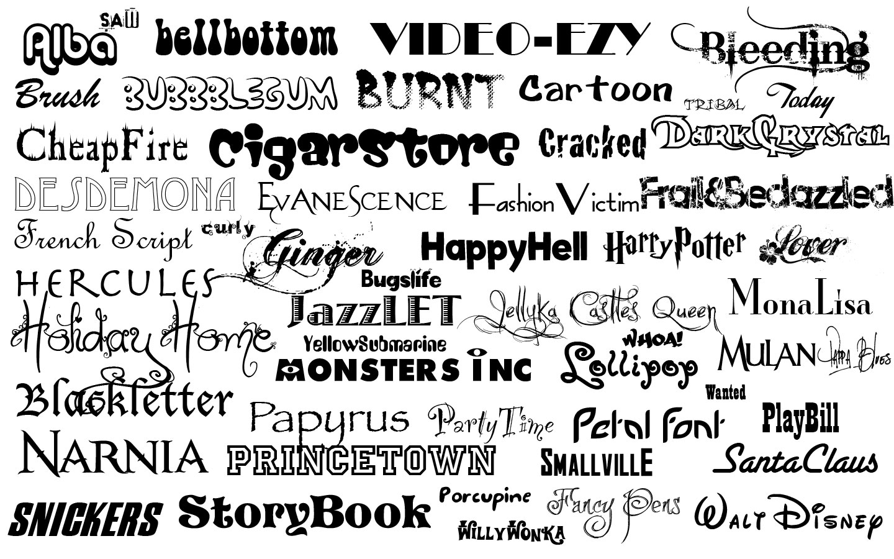
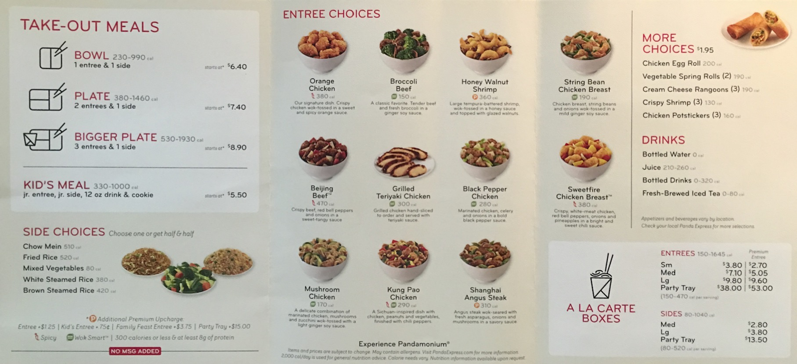
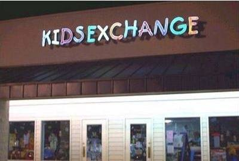

Typography & Readability
The first thing people think about when the hear the word 'typography' is fonts.

So people ask questions like: What fonts should I use? Are there certain fonts that go together? Should I have a custom font? I heard Comic Sans is bad, so I should never use it, right?
The truth is typography is more than just fonts. While fonts are a part of it, there is so much more. Things like:
- Ligatures
- Kerning / Letter Spacing [this can make words blend together to say things you didn't mean]
- Capitalization [All Caps harder to read because everything is the same height]
- Small Caps
- Sub and Sup scripts
- Punctuation Details
- Line Height
- Font-Style (italics)
- Font weights
Basic Font Types
Fonts can be categorized into a few different groups Serif, Sans Serif, Script, Slab, or Display. Divide between what's more readable. For print, most designers agree that Serifs are the way to go. For digital screens, sans serifs are often seen as better and are more efficient because they have simpler shapes. Decorative fonts, such as scripts are harder to read and shouldn't be used for body copy.
Display fonts are more decorative and creative. Sans Serif appear more modern, clean, and crisp. Serifs are more traditional and classical.
So Which Font Should I Use?
So you're saying "Cool story, so basically I should use a basic font to ensure readability and leave it at that?"
No!
The goal with typography is emotion matching + readability. Match the context of your design.
For examaple, the TV show 24 used the Bank Gothic Font. It set the mood of the show. Imagine seeing Comic Sans used in its place. In the same way, a more traditional company may benefit from a serif font.
Regardless of your logo, branding, or main headings, you should always choose readability over emotional feel for your main body text font. Typicall, sans serif since they are better on the web.
Start off using 2 fonts. David Kadavy once shared the idea of playing only with composition, white space, and alignment before adding colors, fonts, and shapes.
Typeface is different from a font in that a typeface has variations of the font. Some refer to it as a font family. Using different weights allows you to create contrast and heirarchy without changing fonts
Font Characteristics to Look For
You want your fonts to be legible and readable for the majority of your designs. The individual glyphs of the font. There are a few things that impact legibility, including
- X-Height. A higher x-height is more readable
- the l1I test. This is a good test to see if the individual letters within a font are different enough so that people can easily distinguish between them. Zero and the letter O are another thing. Every had to read a confirmation code and get stuck on whether it's a 0 or O.
The Little Details That Matter Most
When it comes to type, there are a number of details most people miss. Details that people gloss over. The positioning of a dollar sign. The length of a dash. The difference between the letter x and a multiplication symbol. The many different type of quotes.
Panda Express is a master of the little details. Take a look at their menu. Notice how focused it is on typography. There are no images or textures, and yet the menu looks clean and modern.

PowerPoint has a robust auto-correct system that will automatically adjust certain typographical details. But it's good to know how to add them manually. Below is a table with keyboard shortcuts, HTML codes, and PowerPoint features:
Readability
- The color of the text and backgrounds (white on black is not ideal). Contrast
- The amount of white space
- The line length
- Orphans {balancing multiple line headings}
- Text-Alignment
- Hierarchy/headings/scannability
- One space after a period
- Short Paragraphs
- Text block placement (photos, columns and relation to width). Pictures with white space vs Gaussian blur vs shapeholder
An example of poor spacing
